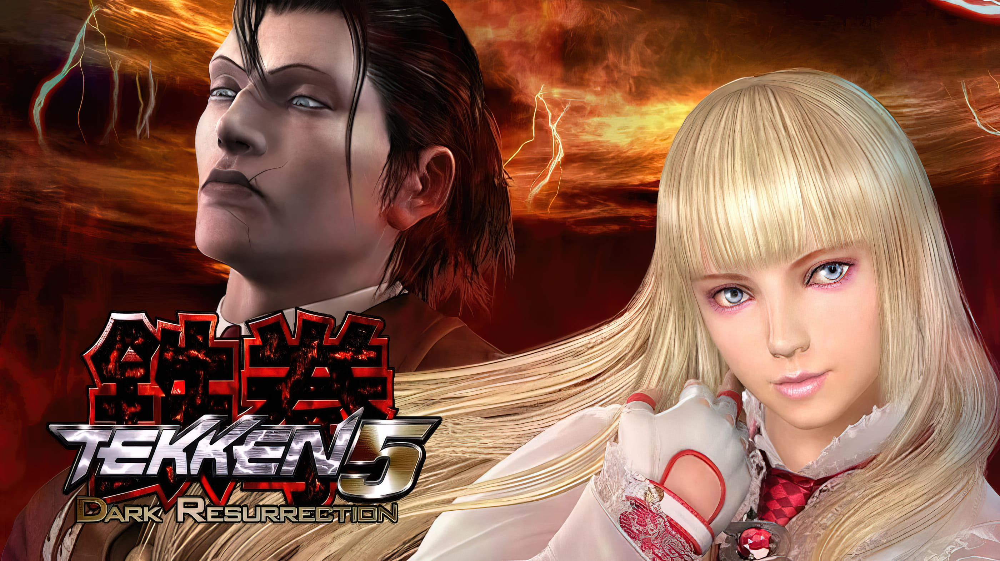

Date: 2005-07-01
Title: Tekken 5: Dark Resurrection
Summary: An enhanced version of Tekken 5 featuring new characters, stages, balance updates, and expanded content.
Categories: Arcade, Enhanced
Type: Game Files
File Size: ~1.5 GB
Format: ISO
Region: Japan / USA / Europe
Platform: Arcade / PSP / PS3
Tekken 5: Dark Resurrection is an upgraded version of Tekken 5, released in arcades and later on PSP and PlayStation 3. It introduced new fighters such as Lili Rochefort and Sergei Dragunov, along with new stages and improved balancing for competitive play. The game refined mechanics and became a favorite among fans for its smooth gameplay and expanded roster. It is considered one of the best updated versions in the Tekken series.
Note: Support Original Game By buying Official CD of Tekken 6 . --Tekken 5: Dark Resurrection Can be Played By either a real Ps3,PSP or By Ps3,PSP Emulatores via Pc. ⬇ Download (PS3 Version) ⬇ Download (PSP Version)